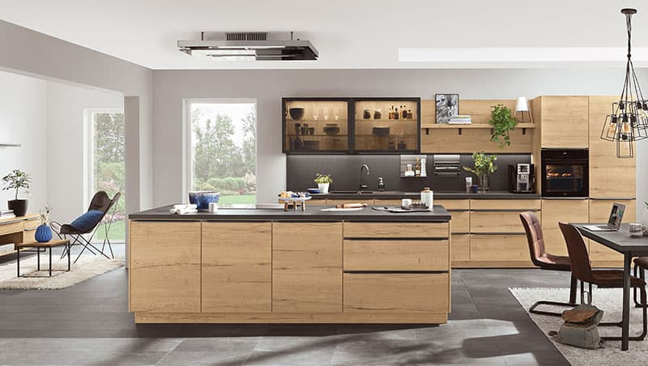

CHCETE I VY KUCHYNI SNŮ?
Nenechte se rozhodit, pokud se úplně necítíte silní v kramflecích při plánování nebo nevíte kde začít. Naši zkušení odborníci jsou tady pro vás. Rádi vám poradíme a vše společně vyřešíme. Náš tým se umí postarat úplně o všechno. Případně si rovnou můžete sjednat schůzku na prodejně.
A v případě, že jste stále trochu nervózní, co vás na schůzce čeká, co si máte připravit, jak budeme společně postupovat, tak tady jsme pro vás připravili takový malý „tahák“.

1. K čemu kuchyni používáte?
Odkaz
Chceme vám plánování ještě více zpříjemnit a přinést mnoho nových možností, jak řešit prostor Vaší nové kuchyně snů, navíc stylově vyladěné.
- seznam 1
- seznam 2
tlusty text tady
2. Uspořádáme prostor
Pomůžeme splnit vaši představu o vysněné kuchyni. Praktické rady před nákupem kuchyně vám mohou pomoci v první fázi rozhodováni. Připravíme kompletní grafický návrh, ve kterém zohledníme všechna vaše přání a požadavky. Zakládáme si na osobním přístupu. Chceme, abyste si plánování své nové kuchyně maximálně užili, starosti přenechte našim odborníkům. Postaráme se o kompletní realizaci a montáž a vy už můžete přemýšlet nad tím, jaké první jídlo ve své nové kuchyni uvaříte.
Více o dispozici kuchyně
3. Narýsujte pracovní trojúhelník
Při zařizování kuchyně se fantazii meze nekladou. Jediné, na co byste neměli zapomenout, je fakt, že všechny kuchyňské práce probíhají mezi třemi základními body – sporákem, chladničkou a dřezem.Ohlídejte si také vzdálenosti mezi těmito body, které by neměly mít více než 6 metrů a méně než 90 cm. Pokud tyto vzdálenosti při plánování nedodržíte, hrozí riziko, že se při vaření budete cítit stísněně, nebo se naopak. Konkrétnější představu o uspořádání kuchyně vám nabídne její pomyslné rozdělení na zóny.
4. Plánujte jednoduše
Dříve, pokud jste si chtěli naplánovat kuchyň, museli jste sáhnout po čtverečkovaném papíru, tužce a pravítku. Později se na scéně objevily počítačové plánovací programy, které umožnily 2D zobrazení. Dnes vám plánování nezabere víc než pár minut a výsledek vidíte okamžitě ve 3D díky intuitivnímu plánovači. Víme, že zařídit interiér tak, abychom se v něm cítili příjemně, je obtížný úkol. Vyžaduje to zkušenosti, představivost, přehled a znalost aktuálních trendů. Pokud se vám to zdá jako obtížný úkol, svěřte ho nám. Náš projektový konzultant pohlídá, aby vaše nová kuchyně stylově ladila s vašim interiérem.
Více o plánovači
5. Montujeme s radostí
Kuchyň vám rádi namontujeme, abyste z ní měli dlouhou dobu velkou radost. A pokud jste manuálně zruční a udělá vám radost si ji postavit sami, směle do toho. Vaše radost je i naše radost 😊.
Více o kuchyni na klíčNová kuchyně s MONTÁŽÍ ZDARMA.
Plánujete nákup nové kuchyně? Neváhejte a využijte právě teď výhodnou nabídku.
Nezbývá nám už nic jiného, než vám popřát dobrou chuť! Těšíme se na vás
Projektový konzultant je tu pro vás
Stylová koupelna i kuchyně bez starostí- komfortní zákaznický přístup
- vaše maximální pohodlí a úspora času
- pravá ruka pro váš projekt
Víme, jak náročná může rekonstrukce vašeho bydlení být. Služby projektového konzultanta vám poskytneme zdarma. Chci vědět více.
Mohlo by vás zajímat
-

Dispozice kuchyně
Pro dobře fungující kuchyni je třeba maximálně využít prostor.
-
Dispozice kuchyně
Pro dobře fungující kuchyni je třeba maximálně využít prostor.
-
Dispozice kuchyně
Pro dobře fungující kuchyni je třeba maximálně využít prostor.
-
Dispozice kuchyně
Pro dobře fungující kuchyni je třeba maximálně využít prostor.
-
Dispozice kuchyně
Pro dobře fungující kuchyni je třeba maximálně využít prostor.
-
Dispozice kuchyně
Pro dobře fungující kuchyni je třeba maximálně využít prostor.